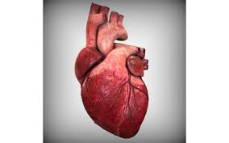

हृदय

हृदय (अंग्रेज़ी: Heart) अधिकांश जीव जंतुओं के शरीर का आवश्यक अंग हैं। इस लेख में मानव हृदय से संबंधित उल्लेख है। हृदय मानव शरीर का अति महत्त्वपूर्ण अंग होता है। यह शरीर में वक्ष भाग में थोड़ा बाईं ओर अधर तल की ओर स्थित होता है। यह जीवनपर्यन्त धड़कता रहता है।
संरचना
एक स्वस्थ मनुष्य का हृदय लगभग 13 सेमी लम्बा तथा 9 सेमी चौड़ा होता है। सामान्यतः इसका आकार बन्द मुट्ठी के समान होता है। हृदय का भार लगभग 300 ग्राम, रंग गहरा लाल या बैंगनी होता है। हृदय हृदयावरण से घिरा रहता है। इस थैली में हृदयवरणीय द्रव भरा रहता है। जो बाहरी आघातों से हृदय की रक्षा करता है।
बाह्य आकारिकी
मनुष्य का हृदय शंक्वाकार पेशीय अंग होता है। इसका ऊपरी भाग कुछ चौड़ा तथा निचला भाग कुछ नुकीला तथा कुछ बाईं ओर झुका रहता है। हृदय के अगले चौड़े भाग को अलिन्द तथा पिछले नुकीले भाग को निलय कहते हैं। दोनों भागों के मध्य अनुप्रस्थ विभाजन रेखा हद खाँच कोरोनरी सल्कस पाई जाती है।
आन्तरिक संरचना
मनुष्य का हृदय चार वेश्मीय होता है। अलिन्द में एक अन्तरा–अलिन्द पट होता है जो अलिन्द को दाएँ तथा बाएँ अलिन्द में बाँट देता है। इस पट पर दाईं ओर एक अण्डाकार गड्डा होता है जिसे फोसा ओवेलिस कहते हैं। दाएँ अलिन्द में पश्च महाशिरा तथा अग्र महाशिरा के छिद्र होते हैं। पश्च महाशिरा के छिद्र पर यूस्टेकियन कपाट पाया जाता है। अग्र महाशिरा के छिद्र के पास ही एक छिद्र कोरोनरी साइनस होता है। इस छिद्र पर कोरोनरी कपाट या थिबेसियन कपाट पाया जाता है। बाएँ अलिन्द में दोनों फुफ्फुसीय शिराएँ एक सम्मिलित छिद्र द्वारा खुलती हैं।
निलय अन्तरा निलय पट द्वारा दाएँ तथा बाएँ निलय में बँटा रहता है। निलय का पेशीय स्तर अलिन्द से अधिक मोटा होता है। दाएँ निलय से पल्मोनरी चाप निकलता है एवं बाएँ निलय से कैरोटिको सिस्टेमिक चाप निकलता है, जो पूरे शरीर में शुद्ध रक्त पहुँचाता है। इन चापों के आधार पर तीन–तीन छोटे अर्द्धचन्द्राकार कपाट लगे रहते हैं। अलिन्द निलय में अलिन्द निलय छिद्रों द्वारा खुलते हैं। इन छिद्रों पर अलिन्द निलय कपाट स्थित होते हैं। ये कपाट रुधिर को अलिन्द से निलय में जाने देते हैं किन्तु निलय से अलिन्द में नहीं। निलय की भित्ति तथा कपाटों में ह्रद रज्जु जुड़े रहते हैं। दाएँ अलिन्द व निलय के बीच के अलिन्द–निलय कपाट में तीन वलन होते हैं। इन्हें त्रिवलनी कपाट कहते हैं। बाएँ अलिन्द व निलय के बीच के कपाट पर दो वलन होते हैं। अतः इसे द्विवलन कपाट या मिट्रल कपाट कहते हैं।
क्रियाविधि
हृदय शरीर के विभिन्न भागों में शुक्त रक्त भेजता है तथा विभिन्न भागों से अशुद्ध रक्त गहण करता है। हृदय शरीर के अंगों में रुधिर को पम्प करने का कार्य करता है। इस कार्य हेतु हृदय हर समय फैलता तथा सिकुड़ता रहता है। हृदय के सिकुड़ने को प्रकुंचन तथा शिथिल होने को अनुशिथिलन कहते हैं। अलिन्दों के शिथिलन से रुधिर महाशिराओं से आकार अलिन्दों में तथा निलयों के शिथिलन से निलयों में एकत्रित होता है। जब हृदय के इन भागों में प्रकुंचन होता है, तो रक्त अलिन्दों से निलय में तथा निलय से महाधमनियों में धकेल दिया जाता है। हृदय में ये क्रियाएँ क्रमशः तथा एक के बाद एक होती हैं। हृदय स्पंदन का प्रारम्भ साइनोएट्रियल नोड में होता है। निलयों का संकुचन केन्द्र अलिन्द निलय घुण्डी में होता है।